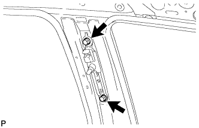
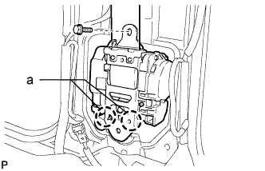
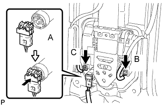
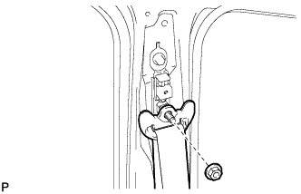

FRONT SEAT OUTER BELT ASSEMBLY > INSTALLATION |
| 1. INSTALL FRONT SHOULDER BELT ANCHOR ADJUSTER ASSEMBLY |
 |
Align the adjuster positioning hole with the claw, and install the adjuster with the 2 bolts.
| 2. INSTALL FRONT SEAT OUTER BELT ASSEMBLY |
 |
Align the claws of the vehicle with the seat belt retractor positioning holes.
Install the seat belt with the bolt.
 |
Connect the pretensioner connector labeled A as shown in the illustration.
Connect the tension reducer connector labeled B.
w/ Pre-Crash Safety System:
Connect the pre-crash safety connector labeled C.
 |
Install the shoulder anchor to the shoulder belt anchor adjuster with the nut.
| 3. INSTALL CENTER PILLAR GARNISH LH |
 |
for 9 Speakers:
Connect the speaker connector.
Attach the clip and 3 guides to install the front pillar garnish.
| 4. INSTALL REAR ASSIST GRIP ASSEMBLY |
 |
Attach the 2 claws to install the rear assist grip.
Install the 2 bolts.
 |
Attach the 4 claws to install the 2 assist grip plugs.
| 5. INSTALL CENTER LOWER PILLAR GARNISH |
 |
Attach the 2 claws and 7 clips to install the center lower pillar garnish.
 |
Install the seat belt anchor with the bolt.
| 6. INSTALL CENTER PILLAR GARNISH COVER |
 |
Attach the 2 clips and 2 guides to install the cover.
| 7. INSTALL REAR DOOR SCUFF PLATE |
 |
Attach the 3 claws and 4 clips to install the scuff plate.
Install the screw.
| 8. INSTALL REAR STEP COVER |
 |
Attach the 2 claws to install the step cover.
| 9. INSTALL FRONT DOOR SCUFF PLATE |
 |
Attach the 7 claws and 4 clips to install the scuff plate.
| 10. CONNECT CABLE TO NEGATIVE BATTERY TERMINAL |
| 11. CHECK SRS WARNING LIGHT |
Check the SRS warning light (Click here).